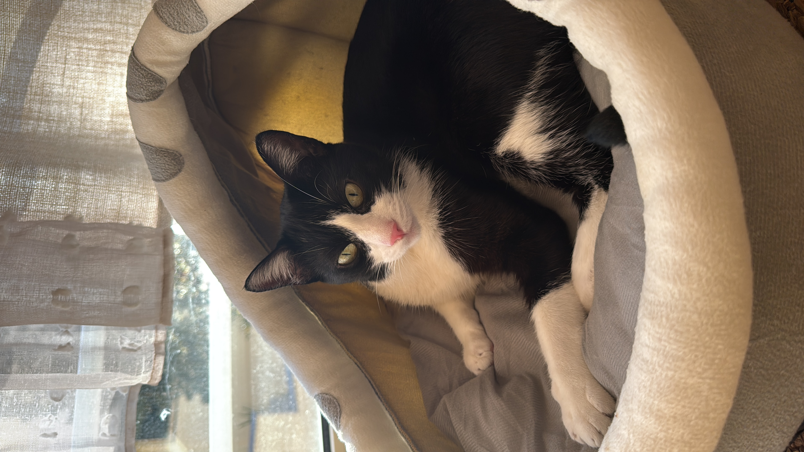
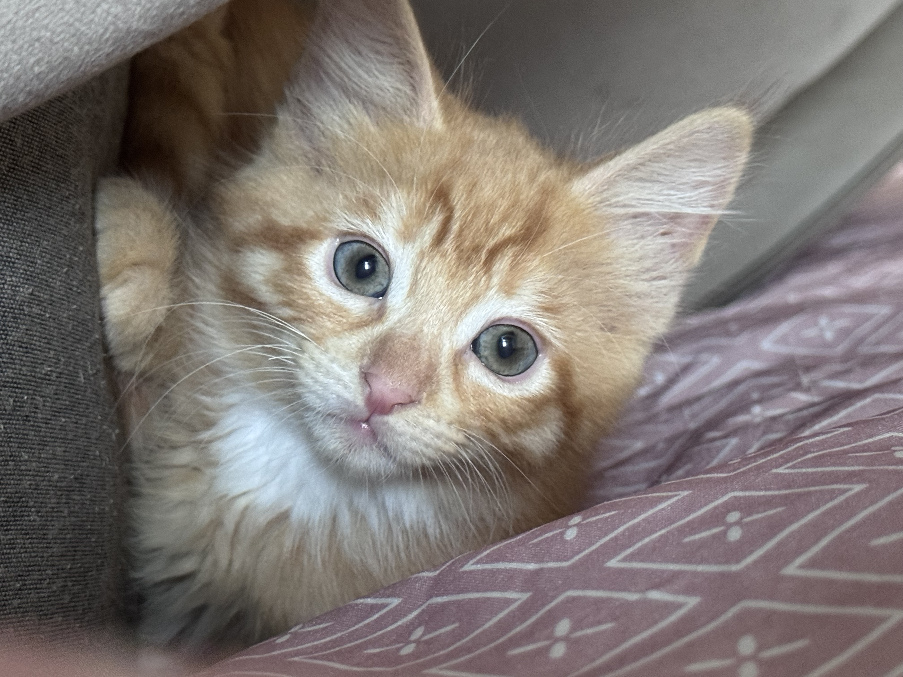
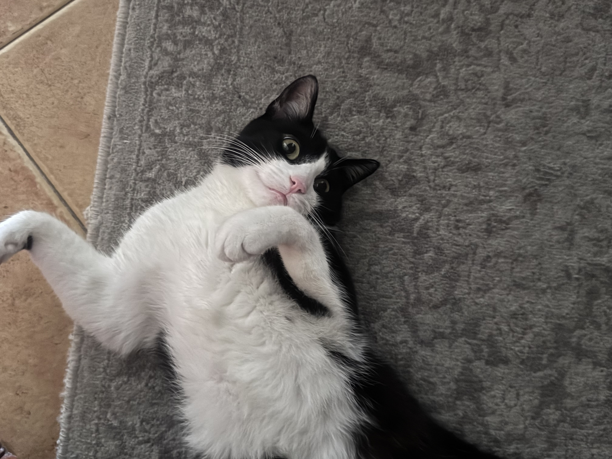
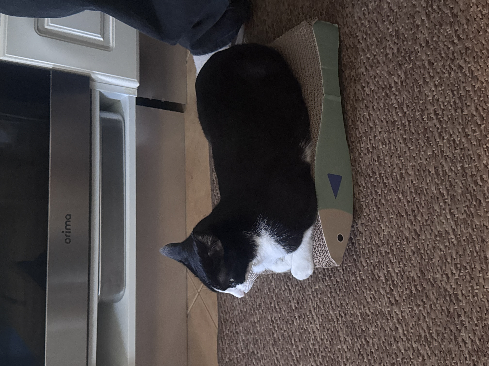
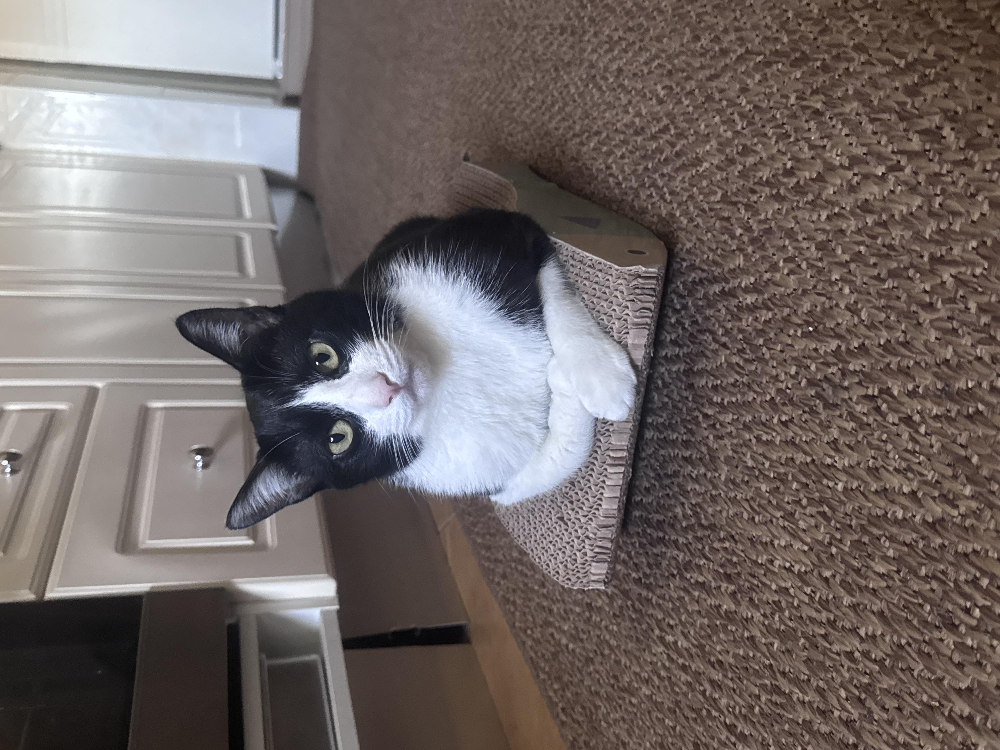
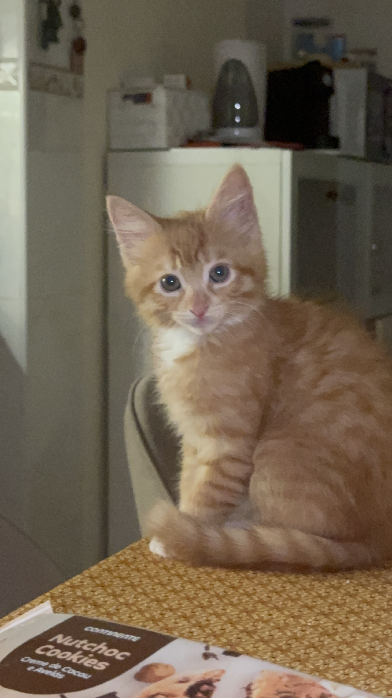
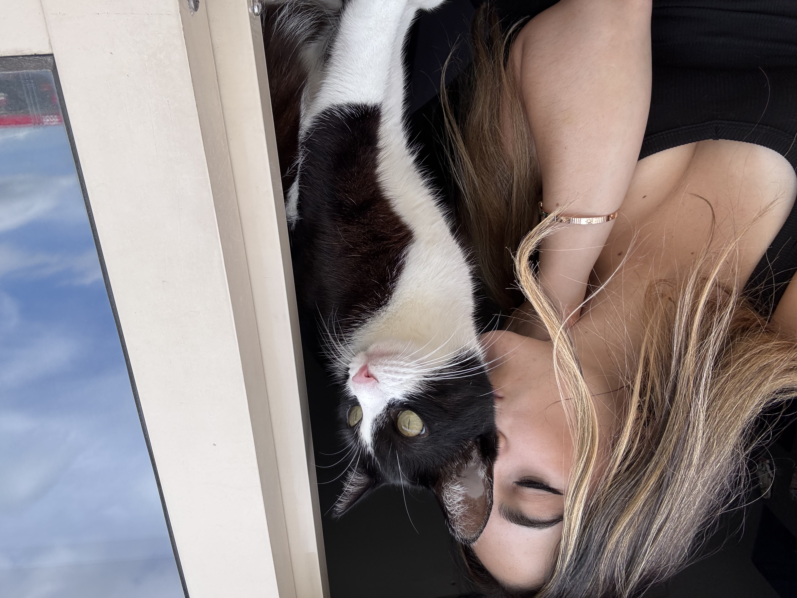
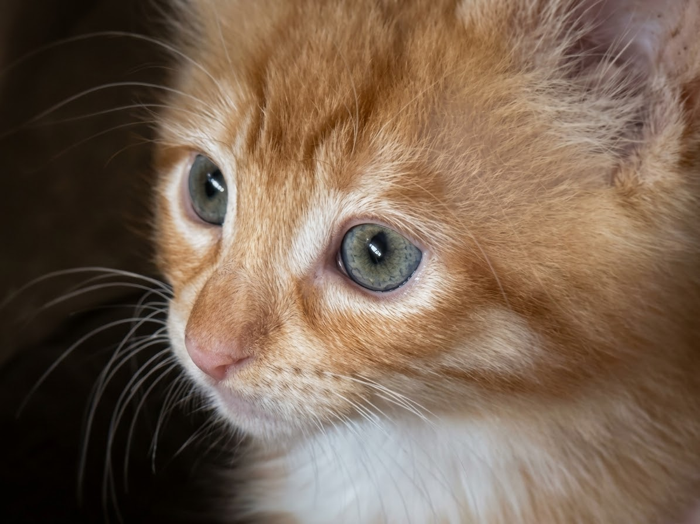

Elvis 🖤🤍
Olá! 🐾 Eu sou o Elvis! 🤍🖤 Sou um gatinho meigo, curioso e muito conversador. Adoro miminhos, bolinhas, comer e dormir. 😹 Sou o irmão mais velho do Tobias e estou pronto para te conquistar com os meus ronrons! 🐱💕
O rei da casa 👑Dois gatos, mil aventuras!
BEM-VINDOS AO NOSSO MUNDO
Conhece o Elvis e o Tobias, vê as nossas fotografias, responde aos quizzes e descobre qual dos nossos gatos combina mais contigo!
Conhecer os gatosOS DONOS DA CASA

Olá! 🐾 Eu sou o Elvis! 🤍🖤 Sou um gatinho meigo, curioso e muito conversador. Adoro miminhos, bolinhas, comer e dormir. 😹 Sou o irmão mais velho do Tobias e estou pronto para te conquistar com os meus ronrons! 🐱💕
O rei da casa 👑
Oláá! 🧡🐾 Eu sou o Tobias! Sou um laranjinha pequenino, cheio de energia e traquinices! 😸 Adoro explorar tudo à minha volta e espalhar fofura por onde passo. Sou o irmão mais novo do Elvis e vim trazer ainda mais diversão a esta casa! 🐈🧡
O pequeno aventureiro 🐾Guarda aqui os momentos mais fofinhos do Elvis e do Tobias!
Descobre curiosidades sobre o mundo dos gatos!
Os gatos têm muitas surpresas! Carrega no botão para descobrires uma curiosidade.
MOMENTOS ESPECIAIS
As nossas fotografias favoritas, porque cada momento com eles merece ser guardado.






Queres saber o que o Elvis ou o Tobias te querem dizer?
TESTA OS TEUS CONHECIMENTOS
Responde às 10 perguntas e descobre quantas acertaste!
O TESTE MAIS FOFO DO SITE
Responde às perguntas de acordo com a tua personalidade. No final, vais descobrir com qual dos nossos gatos tens mais coisas em comum!
CUIDAR É AMAR
Escolhe alimentos adequados à idade e às necessidades do teu gato. Deixa sempre água fresca disponível.
Brincar diariamente ajuda a estimular a curiosidade e a atividade física. Escolhe brinquedos seguros.
Mantém os cuidados veterinários em dia e pede ajuda profissional quando notares alterações na saúde do teu animal.
Cada gato tem a sua personalidade. Respeita os seus limites e deixa-o aproximar-se ao seu ritmo.
A NOSSA FAMÍLIA CRESCE
Prepara a participação do teu animal e escolhe uma fotografia para pré-visualizar.
ACOMPANHA AS NOSSAS AVENTURAS
Segue o Elvis e o Tobias para não perderes os nossos momentos mais fofos.
@elvisandtobias